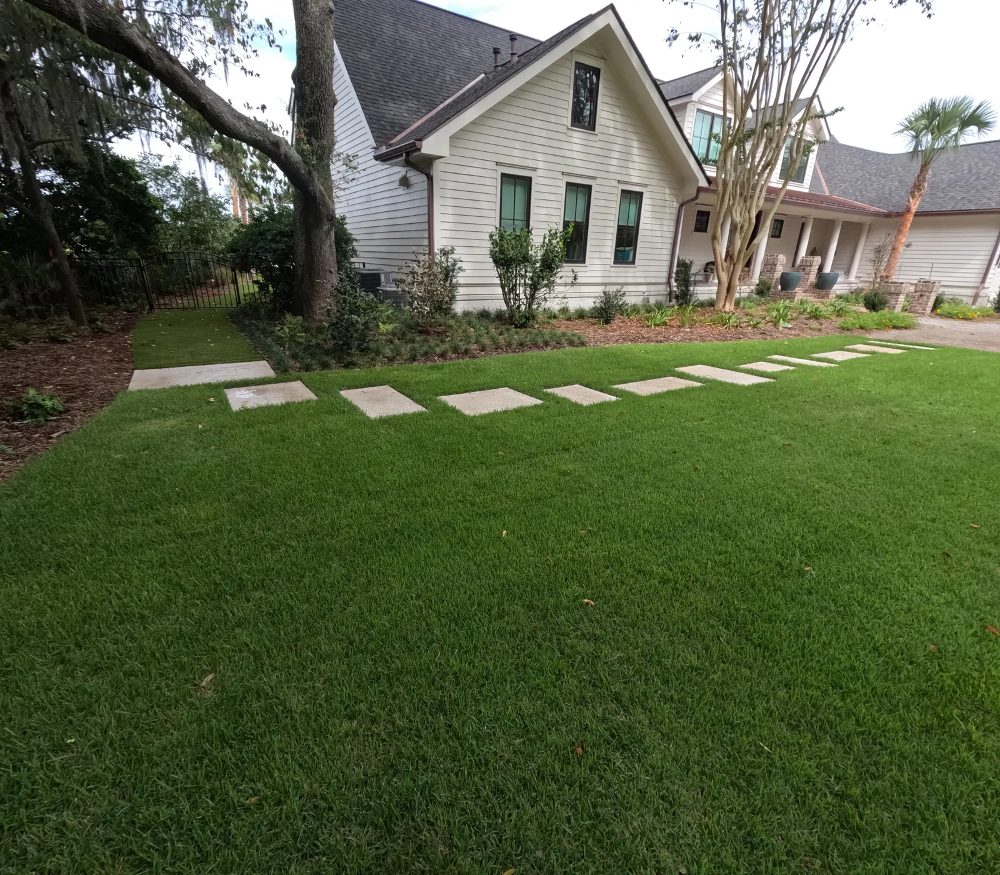
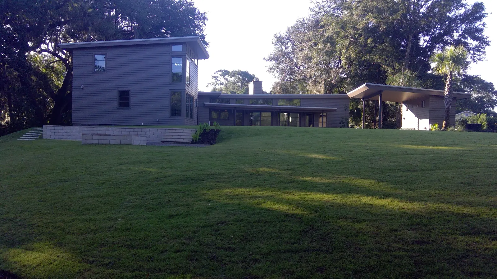

Charleston Sod Installation: The Ultimate Guide to a Perfect Lawn
A lush, green lawn is the cornerstone of a beautiful Charleston home, but achieving that perfect carpet of grass in our unique Lowcountry climate can be a significant challenge. If you dream of an instant, healthy lawn that can withstand the hot, humid summers and mild winters, then a professional sod installation in Charleston, SC is your definitive answer. Forget the long, frustrating, and often unsuccessful process of seeding; a professional sod installation provides a mature, dense, and resilient lawn in a single day.
This ultimate guide will walk you through everything you need to know about getting new sod in Charleston. We’ll take a deep dive into the best grass types for our climate, provide a detailed step-by-step installation process, and outline the crucial aftercare that ensures your new lawn not only survives but thrives. Whether you’re looking for the best sod installation services from a trusted landscape installation company or are a dedicated DIY enthusiast, this guide will equip you with the expert knowledge needed to achieve a stunning, long-lasting lawn.
Sod vs. Seed: Why Sod is the Superior Choice for Charleston Lawns

In Charleston’s demanding climate - where torrential downpours, high humidity, and intense summer heat are the norm - establishing a lawn from seed is an uphill battle. Homeowners often struggle with seeds washing away, fungal diseases taking hold in the dampness, and patchy growth that never quite fills in. Sod offers a significant and immediate advantage by providing an established, mature turf from day one, effectively bypassing the most vulnerable stage of a lawn's life.
Key Advantages of Sod Over Seeding in the Lowcountry:
- Instant Gratification and Usability: A sod lawn is green, full, and beautiful the moment it's installed. While it needs time to root, it's ready for light foot traffic and enjoyment much faster than a seeded lawn, which can take months to mature.
- Superior Weed Control: Sod is grown on professional turf farms where it is cultivated to be dense and free of weeds. This dense mat of grass provides a natural barrier, preventing common Charleston weeds from ever getting a chance to germinate and take over your lawn.
- Immediate Erosion Control: With Charleston's propensity for sudden, heavy rainstorms, newly seeded areas are highly susceptible to erosion, washing away your investment and topsoil. Sod acts as a protective blanket, holding soil in place from the moment it is laid. This is especially critical for sloped or graded yards, and works in tandem with professional landscape grading services to manage water flow effectively.
- Higher Success Rate and Quality: Sod is a professionally grown product. Each roll is a healthy, mature plant cultivated under ideal conditions. This eliminates the guesswork and uncertainty of germination, ensuring you start with a high-quality, resilient turfgrass from the beginning.
- Water Efficiency: While new sod requires significant water initially, its mature structure allows it to establish roots more quickly and efficiently than seed. Over the long term, a healthy sod lawn develops a deep root system that is more drought-tolerant and requires less water than a weaker, seeded lawn.
For Charleston homeowners, choosing sod is not just about aesthetics; it's a practical decision that saves time, reduces frustration, and provides a more reliable, long-term solution for a beautiful lawn.
The Best Grass Types for Sod in Charleston, SC
Choosing the right type of Charleston SC sod is the most critical decision you’ll make for your new lawn. The best grass for your yard will depend on factors like sun exposure, foot traffic, and your desired maintenance level. As the premier Charleston sod experts, the team at Cramer’s Landscaping can help you select the perfect turf for your property. Here are the top-performing warm-season grasses for the Lowcountry.
| Grass Type | Key Characteristics | Ideal For |
|---|---|---|
| St. Augustine | Excellent shade tolerance, dense growth, beautiful blue-green color. | Lawns with mature trees and partial shade. |
| Zoysia | High drought and traffic tolerance, dense and soft feel. | Sunny yards with active families and pets. |
| Bermuda | Very high traffic and drought tolerance, rapid recovery. | Full-sun areas, athletic fields, and high-use lawns. |
| Centipede | Low maintenance, thrives in acidic soil, lighter green color. | Low-traffic, full-sun lawns where minimal upkeep is desired. |
St. Augustine: The Shade-Tolerant Charleston Classic
Often called “Charleston grass,” St. Augustine is a regional favorite for its remarkable ability to thrive in the dappled shade of our iconic live oaks and magnolias. Its broad, flat blades form a dense, lush turf that can outcompete most weeds. While it loves the Charleston heat and humidity, it is the most prone to fungal diseases and pests like chinch bugs, requiring a proactive lawn care approach. It is an excellent choice for properties with mature landscaping that cast significant shade.
Zoysia: The Durable, Barefoot Grass
If you dream of a soft, dense lawn that feels like a carpet underfoot and can handle backyard barbecues and games of fetch, Zoysia is an excellent choice. It’s known for its exceptional durability, good drought resistance, and ability to create a thick, luxurious feel. Zoysia requires at least six hours of direct sun to thrive and is slower to green up in the spring, but its resilience and beauty make it a top contender for many Charleston homeowners.
Bermuda: The Full-Sun Performer
For lawns that receive relentless, all-day sun, Bermudagrass is the undisputed champion. It is incredibly tough, recovers quickly from wear and tear, and is highly drought-tolerant once established. This is the same grass you'll find on golf courses and athletic fields. However, that resilience comes with a trade-off: Bermuda is an aggressive grower that requires full sun and a higher maintenance commitment, including regular fertilization and frequent mowing, to look its best.
Centipede: The Low-Maintenance Option
For homeowners seeking a hands-off approach, Centipede grass is often the answer. It is a slow-growing, low-maintenance turf that thrives in the acidic soils common to the Lowcountry. It requires less fertilizer and less frequent mowing than other varieties. The trade-off is its lower tolerance for heavy foot traffic and a lighter green color that some homeowners find less appealing than the deep greens of Zoysia or St. Augustine.
The 7-Step Professional Sod Installation Process

A successful sod installation in Charleston, SC is a science. It’s all about meticulous preparation. Following these seven steps will ensure your new lawn establishes quickly and grows into a healthy, long-lasting turf that adds value to your home.
Step 1: Comprehensive Soil Analysis
Before any work begins, a professional team should perform a soil test. This isn't just about pH; it's about understanding the soil's composition, nutrient content, and organic matter levels. A soil test from an institution like the Clemson Extension provides a scientific roadmap for creating the perfect foundation for your new sod, ensuring long-term health and reducing the need for future chemical interventions.
Step 2: Complete Removal of Old Turf and Weeds
To give your new sod a clean slate, you must completely eradicate the old lawn and any existing weeds. Simply laying sod over old grass is a recipe for failure. The proper method involves applying a non-selective herbicide to kill all existing vegetation down to the root. After the old turf has died off (usually 10-14 days), it must be physically removed with a professional-grade sod cutter. This step is non-negotiable for ensuring the new sod has direct contact with the soil.
Step 3: Expert Soil Preparation and Grading
With the old turf gone, the soil is now exposed and ready for preparation. The area is tilled to a depth of 4-6 inches to alleviate compaction, which allows new roots to penetrate deeply. This is the critical time to add soil amendments based on the soil test results, such as compost to add organic matter or lime to adjust pH. The soil is then expertly graded to ensure proper drainage away from your home’s foundation and to create a perfectly smooth, level surface free of lumps and low spots. Proper grading is essential for preventing water from pooling, a service best handled by professionals in landscape drainage services.
Step 4: Precise Lawn Measurement
Careful measurement is key to ordering the right amount of sod. A professional team will accurately measure each section of your lawn, accounting for curves, landscape beds, and walkways. Ordering 5-10% extra sod is standard practice to ensure there is enough material for precise cuts and fitting, resulting in a seamless final product.
Step 5: Meticulous Sod Laying Technique
Installing your new sod in Charleston should happen as soon as possible after delivery—ideally within 24 hours to prevent the rolls from drying out. The process starts by laying the sod along a straight, long edge, like a driveway. Each subsequent piece is laid in a staggered, brick-like pattern. This technique ensures that the seams are not aligned, which prevents water from running in channels and creating dry spots. The edges of each piece must be pushed together snugly, without overlapping, to create a seamless appearance.
Step 6: Essential Sod Rolling
Immediately after all the sod is laid, the entire lawn must be rolled with a water-filled lawn roller. This vital step presses the sod firmly against the soil, ensuring intimate root-to-soil contact and eliminating any air pockets. Good contact is essential for the transfer of water and nutrients, which is the foundation of rapid root establishment.
Step 7: Critical Initial Watering
This is the final, and perhaps most critical, step of the installation day. Watering must begin within 30 minutes of the first roll being laid. The initial watering needs to be heavy and deep, saturating the new sod and the top 1-2 inches of soil beneath it. This first drink is what revives the turf from the stress of being harvested and transported and kickstarts the rooting process.
The First 30 Days: A Week-by-Week New Sod Watering Schedule
Proper watering is the single most important factor in ensuring your new sod takes root and thrives. The first month is a critical period. Here is a general watering schedule for your Charleston sod installation.
- Week 1 (Days 1-7): The Establishment Phase. Water 2-3 times per day for 15-20 minutes in each zone. The goal is to keep the sod and the soil just beneath it constantly moist, like a wrung-out sponge. Never let it dry out completely. The edges of the sod pieces and areas along concrete are most vulnerable to drying.
- Week 2 (Days 8-14): The Rooting Phase. Reduce watering to once per day, but increase the duration to 25-35 minutes. This change encourages the roots to start growing deeper into the soil in search of moisture, which is crucial for building a strong foundation. A robust root system is the key to a healthy lawn and is supported by a well-designed irrigation system installation.
- Week 3 (Days 15-21): The Strengthening Phase. If the sod resists a gentle tug (a sign that roots are taking hold), you can begin to water less frequently. Water every other day for a longer period (35-45 minutes). This deep watering promotes a resilient, drought-tolerant root system.
- Week 4 (Days 22-30): The Transition Phase. Begin transitioning to a more typical watering schedule of 2-3 times per week, depending on rainfall and temperatures. Always water deeply and infrequently to encourage deep roots. A good rule of thumb is to provide about 1 to 1.5 inches of water per week.
Understanding the Cost of Sod Installation in Charleston, SC

While it's a significant investment, a professional sod installation adds immediate value and curb appeal to your home. The cost can vary based on several factors. While we recommend contacting us for a precise quote, understanding these factors can help you budget for your project.
Factors Influencing Sod Installation Cost:
- Grass Type: Premium varieties like Zoysia and certain St. Augustine cultivars cost more per square foot than common Bermuda or Centipede.
- Project Size: The total square footage of your lawn is the primary driver of material costs.
- Site Preparation: The amount of work needed to prepare your yard, such as removing an old lawn, extensive grading, or adding significant amounts of topsoil, will affect the labor cost.
- Accessibility: Yards that are difficult to access with equipment may incur additional labor charges.
For a detailed and accurate estimate tailored to your specific property, it's always best to consult with the best sod installation services in the area. You can learn more about our approach on our sod installation service page or contact Cramer's Landscaping for a free quote.
Common Sod Installation Mistakes to Avoid
At Cramer's Landscaping, we've seen it all. Here are the most common mistakes homeowners make when attempting a DIY sod installation:
- Improper Soil Preparation: Simply laying sod on top of hard, un-tilled soil (or worse, over existing grass) is the #1 cause of failure. The new roots have nowhere to go, and the sod will quickly die.
- Leaving Gaps Between Sod Pieces: Small gaps seem harmless, but they allow weeds to push through and cause the edges of the sod to dry out and turn brown.
- Incorrect Watering: Both underwatering and overwatering can be disastrous. Underwatering in the first few days will kill the sod, while overwatering can lead to fungal diseases and root rot. Following a strict schedule is key.
- Mowing Too Soon: Mowing before the roots have firmly established can pull up the new sod and place immense stress on the young turf. You must wait until the sod cannot be lifted before the first mow.
Troubleshooting Your New Charleston Sod Lawn

Even with a professional installation, you should monitor your new lawn closely. Here are solutions to common issues:
- Problem: Brown Patches or Edges Drying Out.
- Cause: This is almost always due to insufficient water. The edges and corners of sod pieces are the first to dry out. It can also be caused by air pockets under the sod.
- Solution: Immediately increase watering frequency. Hand-water the brown areas to give them extra attention. Lift a corner of the affected sod; if the soil is dry, you need more water. Ensure all sprinklers are providing head-to-head coverage.
- Problem: Sod Feels Spongy or Water is Pooling.
- Cause: You are overwatering. Excess water suffocates the roots, preventing them from getting the oxygen they need to grow.
- Solution: Immediately reduce your watering duration. Allow the soil to dry slightly between waterings. Check your soil moisture by sticking a finger 2-3 inches deep; it should be moist, not soggy.
- Problem: Weeds Popping Up in Seams.
- Cause: A few weeds are inevitable, especially if dormant seeds were in the topsoil.
- Solution: Hand-pull any weeds that appear. Do NOT apply any herbicides for at least the first 30-60 days, as these chemicals can damage the new, vulnerable turf.
Trust the Charleston Sod Experts for a Flawless Lawn
A beautiful, healthy lawn significantly enhances your home’s curb appeal and your enjoyment of your outdoor space. It is a key component of a comprehensive landscape design. While a DIY sod installation in Charleston, SC is possible, the expertise, specialized equipment, and high-quality materials provided by a professional landscaping company ensure a flawless, long-lasting result.
At Cramer’s Landscaping, we are more than just installers; we are turfgrass professionals dedicated to building beautiful, sustainable landscapes in the Lowcountry. Our sod installation service is second to none. From comprehensive site preparation to sourcing the healthiest local sod, we manage every detail to guarantee your new lawn is a success.
If you’re ready to invest in a stunning, instant lawn, review our sod installation services and then contact Cramer’s Landscaping today for a free consultation and estimate. Let our team of Charleston sod experts help you build the lawn of your dreams.
Frequently Asked Questions About Sod in Charleston
How long does it take for new sod to root?
With proper watering, new sod will begin to develop shallow roots within 10-14 days. It typically takes 4-6 weeks for the root system to become fully established and for the lawn to be ready for regular use.
Can I lay sod over my existing grass?
No, you should never lay new sod over an existing lawn. The new roots will not be able to penetrate the old grass and thatch layer to reach the soil, and the sod will quickly die. The old lawn must be completely removed first.
When can I mow my new sod for the first time?
You should wait until the sod is firmly rooted, typically around 2-3 weeks after installation. Test this by gently tugging on a corner of the sod. If it holds firm, it's ready for its first mow. For the first mow, set your mower to the highest setting to avoid stressing the new grass.
Planning a Project of Your Own?
See everything we design and build, or get in touch to talk through your ideas with Doug and Zach.